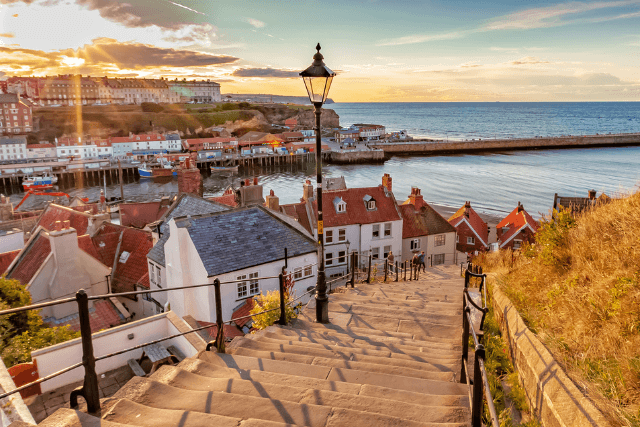
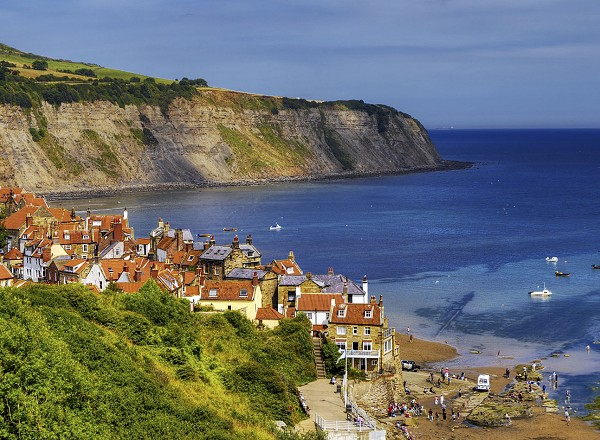

Day 1 — 5月23日（週六）
York · Whitby · Robin Hood's Bay · 露營觀星
取車出發
NCP Car Park, 170 Marylebone Road, London NW1 5AR，Enterprise 租車取 Peugeot Expert (5.8m³)。這台廂型車空間足夠裝下鋼琴和露營裝備。
Finchley 接朋友
從 Marylebone 往北約 25 分鐘車程，接另外兩位同行夥伴。三人同行可以輪流開車，長途比較不累。
北上 York
沿 M1/A1(M) 北上，約 3.5 小時車程（200 英里）。建議中途在 Ferrybridge Services 休息。
🏰 York 午餐 + 逛街
中午抵達 York，正好吃午餐！可以逛 York Minster（英國最大的哥德式教堂）、The Shambles（哈利波特斜角巷靈感來源）、城牆散步。停留 2.5 小時，悠閒享受。

North York Moors — Hole of Horcum
從 York 開車 40 分鐘到 Hole of Horcum，這是一個壯觀的 400 英尺深天然山谷。短程環形步道約 1.5-2 小時。如果跳過此站，可以直接從 York 開往 Whitby（1.5h），每個後續景點都能多待一些時間。

⚓ Whitby — 199 階梯 + Abbey
吸血鬼德古拉小說的靈感來源！爬上著名的 199 階梯到 Whitby Abbey 廢墟，俯瞰整個港口和北海。海港邊的紅屋頂小鎮非常上相。如果跳過 NYM，可以在 Whitby 待更久（1.5h），甚至吃個 Fish & Chips。

🏘️ Robin Hood's Bay 漁村
從 Whitby 開 15 分鐘即到。房子層層疊疊蓋在懸崖上，狹窄的小巷子通往海灘，是 Yorkshire 海岸最美的漁村之一。走下去拍照再上來約 45 分鐘。

開往 Wold Farm 露營地
沿海岸 A171→A165 南下到 Flamborough Head，約 1 小時車程。
⛺ 海邊露營 — Wold Farm
Wold Farm 位於 Flamborough Head，面向北海（東面），可以直接從營地看到海景。三人搭帳篷約 20-30 分鐘。日落 21:12，搭好帳篷後還有時間煮飯。晚上光害低，適合觀星；隔天清晨面東看日出。